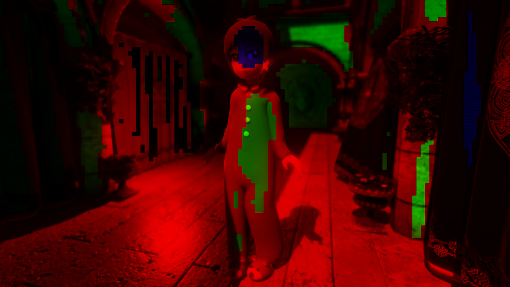
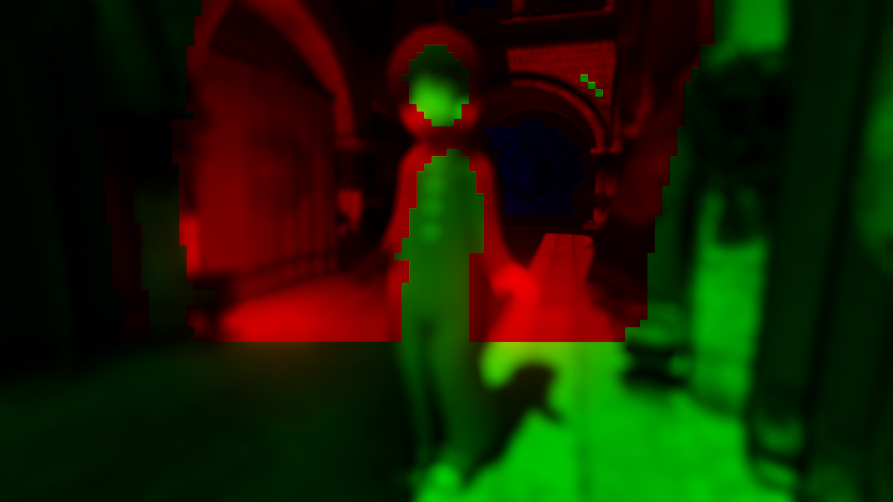
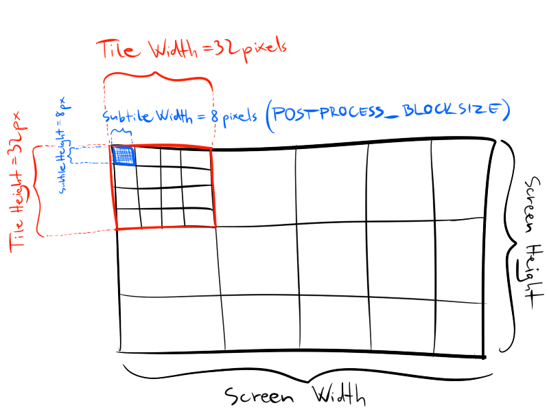

Tile-based optimization for post processing
One way to optimize heavy post processing shaders is to determine which parts of the screen could use a simpler version. The simplest form of this is use branching in the shader code to early exit or switch to a variant with reduced sample count or computations. This comes with a downside that even the parts where early exit occur, must allocate as many hardware resources (registers or groupshared memory) as the heaviest path. Also, branching in the shader code can be expensive when the branch condition is not uniform (for example: constant buffer values or SV_GroupID are uniform, but texture coordinates or SV_DispatchThreadID are not), because multiple threads can potentially branch differently and cause divergence in execution and additional instructions.
Instead of branching, we can consider to have multiple different shaders with different complexities and use the DispatchIndirect functionality of DX11+ graphics APIs. The idea is to first determine which parts of the screen will require what kind of complexity, this will be done per tile. A tile could be for example at 32×32 or 16×16 pixels in size, but it could depend on the kind of post process. What do I mean by complexity? Let’s take depth of field for example. Depth of field is used to focus on an object and make it sharp, while making the foreground and background blurry. The part of the screen that will appear completely sharp will use early exit shader, without doing any blurring. The other parts of the screen will instead perform a blur. For a more complex depth of field effect, such as the one described in Siggraph 2014 by Jorge Jimenez as “scatter-as-you-gather” depth of field (such a great presentation!), the blur can be separated into two kinds. A simple blur can be used where the whole tile contains similar CoC (Circle of Confusion – the amount of blur, basically), and a more expensive weighted blur will be used in the tiles where there are vastly different CoC values. With this knowledge we can design a prepass shader that classifies tiles as how complex shader they require. After that, we just DispatchIndirect multiple times back to back – one for each complexity and using different shaders. This requies a lot of setup work, so it’s a good idea to leave it for last step in the optimizations.
The implementation will consist of the following steps:
1) Tile classification.
Usually you are already gathering some per tile information for these kind of post processes. For example for the Depth of field I put the classification in the same shader that computes the min-max CoC per tile. This shader writes to 3 tile list in my case:
- early exit tiles (when tile maximum CoC is small enough)
- cheap tiles (maxCoC – minCoc is small enough)
- expensive tiles (everything else)
Take a look at this example:
(The cute model is made by Sketchfab user woopoodle)


For motion blur, we can also do similar things, but using min-max of velocity magnitudes.
For screen space reflection, we could classify by reflectivity and roughness.
For tiled deferred shading, we can classify tiles for different material types. Uncharted 4 did this as you can find here: http://advances.realtimerendering.com/s2016/index.html
Possibly other techniques can benefit as well.
The tile classification shader is implemented via stream compaction, like this:
static const uint POSTPROCESS_BLOCKSIZE = 8;
static const uint TILE_STATISTICS_OFFSET_EARLYEXIT = 0;
static const uint TILE_STATISTICS_OFFSET_CHEAP = TILE_STATISTICS_OFFSET_EARLYEXIT + 4;
static const uint TILE_STATISTICS_OFFSET_EXPENSIVE = TILE_STATISTICS_OFFSET_CHEAP + 4;
RWByteAddressBuffer tile_statistics;
RWStructuredBuffer<uint> tiles_earlyexit;
RWStructuredBuffer<uint> tiles_cheap;
RWStructuredBuffer<uint> tiles_expensive;
[numthreads(POSTPROCESS_BLOCKSIZE, POSTPROCESS_BLOCKSIZE, 1)]
void main(uint3 DTid : SV_DispatchThreadID) // this runs one thread per tile
{
// ...
const uint tile = (DTid.x & 0xFFFF) | ((DTid.y & 0xFFFF) << 16); // pack current 2D tile index to uint
uint prevCount;
if (max_coc < 0.4f)
{
tile_statistics.InterlockedAdd(TILE_STATISTICS_OFFSET_EARLYEXIT, 1, prevCount);
tiles_earlyexit[prevCount] = tile;
}
else if (abs(max_coc - min_coc) < 0.2f)
{
tile_statistics.InterlockedAdd(TILE_STATISTICS_OFFSET_CHEAP, 1, prevCount);
tiles_cheap[prevCount] = tile;
}
else
{
tile_statistics.InterlockedAdd(TILE_STATISTICS_OFFSET_EXPENSIVE, 1, prevCount);
tiles_expensive[prevCount] = tile;
}
}2) Kick indirect jobs.
If your tile size is the same as the POSTPROCESS_BLOCKSIZE that will render the post process, you could omit this step and just stream compact to the indirect argument buffers inside the classification shader itself. But in my case I am using 32×32 pixel tiles, while the thread count of the compute shaders is 8×8. So the “kick jobs” shader will compute the actual dispatch count and write indirect argument buffers. This shader will also be resposible to reset the counts for the next frame. It is using only 1 thread:
static const uint DEPTHOFFIELD_TILESIZE = 32;
static const uint INDIRECT_OFFSET_EARLYEXIT = TILE_STATISTICS_OFFSET_EXPENSIVE + 4;
static const uint INDIRECT_OFFSET_CHEAP = INDIRECT_OFFSET_EARLYEXIT + 4 * 3;
static const uint INDIRECT_OFFSET_EXPENSIVE = INDIRECT_OFFSET_CHEAP + 4 * 3;
#define sqr(a) ((a)*(a))
RWByteAddressBuffer tile_statistics;
RWStructuredBuffer<uint> tiles_earlyexit;
RWStructuredBuffer<uint> tiles_cheap;
RWStructuredBuffer<uint> tiles_expensive;
[numthreads(1, 1, 1)]
void main(uint3 DTid : SV_DispatchThreadID)
{
// Load statistics:
const uint earlyexit_count = tile_statistics.Load(TILE_STATISTICS_OFFSET_EARLYEXIT);
const uint cheap_count = tile_statistics.Load(TILE_STATISTICS_OFFSET_CHEAP);
const uint expensive_count = tile_statistics.Load(TILE_STATISTICS_OFFSET_EXPENSIVE);
// Reset counters:
tile_statistics.Store(TILE_STATISTICS_OFFSET_EARLYEXIT, 0);
tile_statistics.Store(TILE_STATISTICS_OFFSET_CHEAP, 0);
tile_statistics.Store(TILE_STATISTICS_OFFSET_EXPENSIVE, 0);
// Create indirect dispatch arguments:
const uint tile_replicate = sqr(DEPTHOFFIELD_TILESIZE / POSTPROCESS_BLOCKSIZE); // for all tiles, we will replicate this amount of work
tile_statistics.Store3(INDIRECT_OFFSET_EARLYEXIT, uint3(earlyexit_count * tile_replicate, 1, 1));
tile_statistics.Store3(INDIRECT_OFFSET_CHEAP, uint3(cheap_count * tile_replicate, 1, 1));
tile_statistics.Store3(INDIRECT_OFFSET_EXPENSIVE, uint3(expensive_count * tile_replicate, 1, 1));
}Note that the tile_statistics buffer will also be used as the indirect argument buffer for DispatchIndirect later, but using offsets into the buffer. The value tile_replicate is key to have different tile size than the threadcount of the post processing shaders (POSTPROCESS_BLOCKSIZE). Essentially we will dispatch multiple thread groups per tile to account for this difference. However, TILESIZE should be evenly divisible by POSTPROCESS_BLOCKSIZE to keep the code simple.
3) Use DispatchIndirect
BindComputeShader(&computeShaders[CSTYPE_DEPTHOFFIELD_MAIN_EARLYEXIT]);
DispatchIndirect(&buffer_tile_statistics, INDIRECT_OFFSET_EARLYEXIT);
BindComputeShader(&computeShaders[CSTYPE_DEPTHOFFIELD_MAIN_CHEAP]);
DispatchIndirect(&buffer_tile_statistics, INDIRECT_OFFSET_CHEAP);
BindComputeShader(&computeShaders[CSTYPE_DEPTHOFFIELD_MAIN]);
DispatchIndirect(&buffer_tile_statistics, INDIRECT_OFFSET_EXPENSIVE);Note that if you are using DX12 or Vulkan, you don’t even need to synchronize between these indirect executions because they touch mutually exclusive parts of the screen. Unfortunately, DX11 will always wait for a compute shader to finish before starting the next which is a slight inefficiency in this case.
4) Execute post process
You will need to determine which tile and which pixel are you currently shading. I will refer to tile which is the 32 pixel wide large tile taht was classified and subtile that is the 8 pixel wide small tile that corresponds to the thread group size. You can see what I mean on this drawing:

So first we read from the corresponding tile list (early exit shader reads from early exit tile list, cheap shader from cheap tile list, and so on…) and unpack the tile coordinate like this:
// flattened array index to 2D array index
inline uint2 unflatten2D(uint idx, uint dim)
{
return uint2(idx % dim, idx / dim);
}
RWStructuredBuffer<uint> tiles;
[numthreads(POSTPROCESS_BLOCKSIZE * POSTPROCESS_BLOCKSIZE, 1, 1)]
void main(uint3 Gid : SV_GroupID, uint3 GTid : SV_GroupThreadID)
{
const uint tile_replicate = sqr(DEPTHOFFIELD_TILESIZE / POSTPROCESS_BLOCKSIZE);
const uint tile_idx = Gid.x / tile_replicate;
const uint tile_packed = tiles[tile_idx];
const uint2 tile = uint2(tile_packed & 0xFFFF, (tile_packed >> 16) & 0xFFFF);After we got the tile, we can continue to compute the pixel we want to shade:
const uint subtile_idx = Gid.x % tile_replicate;
const uint2 subtile = unflatten2D(subtile_idx, DEPTHOFFIELD_TILESIZE / POSTPROCESS_BLOCKSIZE);
const uint2 subtile_upperleft = tile * DEPTHOFFIELD_TILESIZE + subtile * POSTPROCESS_BLOCKSIZE;
const uint2 pixel = subtile_upperleft + unflatten2D(GTid.x, POSTPROCESS_BLOCKSIZE);Note that we are running a one dimensional kernel instead of 2 dimensional. I think this simplifies the implementation because the tile lists are also one dimensional, but we need to use the unflatten2D helper function to convert 1D array index to 2D when computing the pixel coordinate. Also note that this code adds instructions to the shader, but up until the last line, those instructions are not divergent (because they are relying on the uniform SV_GroupID semantic), so they can be considered cheap as they are not using the most precious hardware resources, the VGPR (Vector General Purpose Registers).
After we have the pixel coordinate, we can continue writing the regular post processing code as usual.
Interestingly, I have only seen performance benefit with this optimization when the loops were unrolled in the blurring shaders. Otherwise, they were not bottlenecked by register usage, but the dynamic loops were not performing very well. After that, I have experienced an improvement with the tiling optimization, about 0.3 milliseconds were saved in Depth of Field at 4k resolution on Nvidia GTX 1070 GPU.
Probably further tests need to be conducted and trying different tile sizes and classification threshold values. However, this is already a good one to have in your graphics optimization toolbox.
You can find my implementation of this in WickedEngine for the motion blur and depth of field effects.
Let me know if you spot any mistakes or have feedback in the comments!